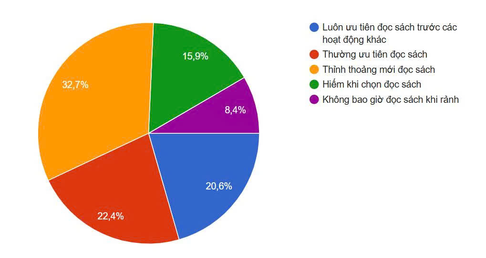
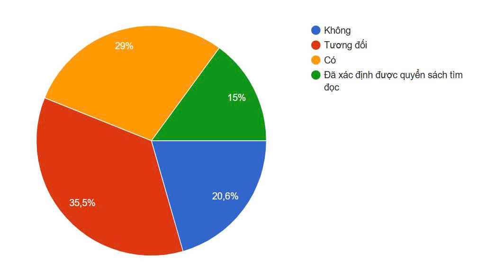

1. Tên dự án: MỨC ĐỘ QUAN TÂM CỦA HỌC SINH ĐÓI VỚI VIỆC ĐỌC SÁCH.
2. Mục tiêu dự án: Đánh giá được mức độ quan tâm của học sinh đối với việc đọc sách
3.Câu hỏi nghiên cứu: Học sinh quan tâm đến việc đọc sách ở mức độ nào?
4. Phương pháp nghiên cứu:
5. Hình thức của dự án: Học sinh trong nhóm thu thập dữ liệu từ người khác thông qua bảng hỏi có chủ đề và độ quan tâm của học sinh về việc đọc sách.
6. Nhiệm vụ:
7. Sản phẩm của bài tập dự án: Bài báo cáo kết quả nghiên cứu về mức độ quan tâm của học sinh đối với việc đọc sách.
8. Thời gian thực hiện: từ ngày......đến ngày..........
1. Khái niệm "quan tâm"
“Quan tâm là hoạt động tinh thần mang tính động cơ, liên quan đến sự chú ý, tò mò về một đối tượng nào đó gây nên sự kích thích về cảm xúc và suy nghĩ” (Hall et al., 1977). Như vậy, có thể nói quan tâm là mức đầu tiên để hình thành nhận thức, sở thích của con người về một đối tượng. Ngoài ra, mối quan tâm còn mang tính chủ quan, tùy thuộc vào kiến thức, kinh nghiệm,… của mỗi cá nhân.
2. Kết quả khảo sát
2.1. Thực trạng về sự quan tâm của học sinh về việc đọc sách
Để tìm hiểu sự quan tâm của các bạn học sinh về việc đọc sách, nhóm đã đặt câu hỏi: "Khi có thời gian rảnh, mức độ ưu tiên đọc sách của bạn như thế nào?"

Kết quả cho thấy Biểu đồ cho thấy mức độ ưu tiên đọc sách của học sinh trong thời gian rảnh khá đa dạng. Trong đó, tỷ lệ học sinh thỉnh thoảng mới đọc sách chiếm cao nhất với 32,7%, tiếp theo là thường ưu tiên đọc sách (22,4%) và luôn ưu tiên đọc sách trước các hoạt động khác (20,6%). Bên cạnh đó, 15,9% học sinh hiếm khi chọn đọc sách, và 8,4% cho biết không bao giờ đọc sách khi rảnh.
Từ kết quả này có thể kết luận rằng phần lớn học sinh chưa xem đọc sách là hoạt động ưu tiên hàng đầu trong thời gian rảnh.
2.2. Độ sẵn lòng tìm đọc một quyển sách của các bạn học sinh trong thời gian tới
Để tìm hiểu mức độ mong muốn tìm một tựa sách để đọc, nhóm đã đặt câu hỏi: "Trong thời gian tới, bạn có dự định tìm đọc một quyển sách nào không?"

Biểu đồ cho thấy mức độ sẵn lòng tìm đọc một quyển sách trong thời gian tới của học sinh có sự khác nhau. Trong đó, 35,5% học sinh cho biết tương đối sẵn sàng, 29% cho biết có ý định đọc, và 15% đã xác định được quyển sách sẽ tìm đọc. Tuy nhiên, vẫn còn 20,6% học sinh không có ý định tìm đọc sách trong thời gian tới.
Từ kết quả này có thể thấy rằng phần lớn học sinh có sự quan tâm nhất định đến việc đọc sách trong tương lai, dù mức độ sẵn sàng chưa thật sự cao.
> 2.3. Nguyên một số bạn học sinh chưa quan tâm đến việc đọc sách
Để tìm hiểu nguyên nhân, nhóm đã phỏng vấn một số học sinh và thu một số câu trả lời có đại ý như sau:
Qua phỏng vấn một số học sinh, nhóm nhận thấy nguyên nhân khiến học sinh chưa quan tâm đến việc đọc sách chủ yếu là do thiếu thời gian, sự hấp dẫn của các hình thức giải trí trực tuyến và chưa tìm được loại sách phù hợp với sở thích cá nhân.
Từ kết quả khảo sát, có thể kết luận học sinh ......
Thành viên